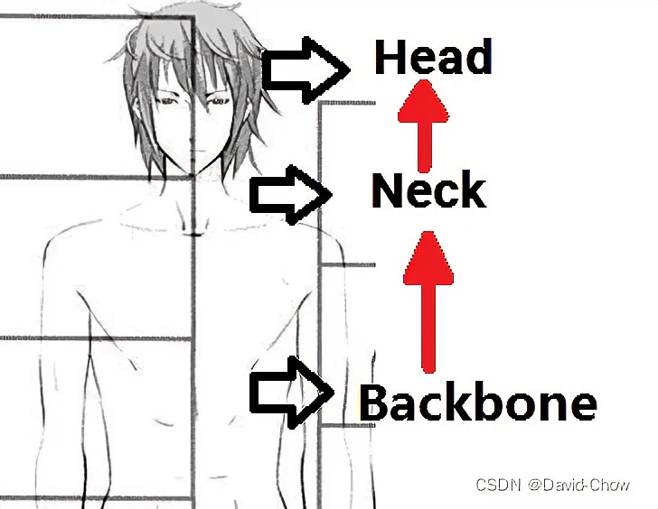

深度学习相关概念
持续更新
术语
backbone
翻译为骨干网络的意思，既然说是主干网络，就代表其是网络的一部分，这个主干网络大多时候指的是提取特征的网络，其作用就是提取图片中的信息，供后面的网络使用。
这些网络经常使用的是resnet、VGG等，而不是我们自己设计的网络，因为这些网络已经证明了在分类等问题上的特征提取能力是很强的。在用这些网络作为backbone的时候，都是直接加载官方已经训练好的模型参数，后面接着我们自己的网络。让网络的这两个部分同时进行训练，因为加载的backbone模型已经具有提取特征的能力了，在我们的训练过程中，会对他进行微调，使得其更适合于我们自己的任务。
主要分成三类：\CNNs结构, Transformer结构（如ViT及衍生算法，比如PVT），CNNs+Transformer结构**。深度学习常用的backbone有哪些深度学习backbone万里鹏程转瞬至的博客-CSDN博客
backbone
相关概念还有：
Neck：是放在backbone和head之间的，是为了更好的利用backbone提取的特征。
Bottleneck：瓶颈的意思，通常指的是网网络输入的数据维度和输出的维度不同，输出的维度比输入的小了许多，就像脖子一样，变细了。经常设置的参数 bottle_num=256，指的是网络输出的数据的维度是256 ，可是输入进来的可能是1024维度的。
Head：head是获取网络输出内容的网络，利用之前提取的特征，head利用这些特征，做出预测。
concat与add
这是两种深度特征融合方式。
- concat是通道数的增加，也就是说描述图像本身的特征数（通道数）增加了，而每一特征下的信息是没有增加；横向或纵向空间上的叠加.
- add为简单的像素叠加,是描述图像的特征下的信息量增多了，但是描述图像的维度本身并没有增加，只是每一维下的信息量在增加，这显然是对最终的图像的分类是有益的卷积中add与concat操作区别及作用卷积层怎么concat小嘿嘿a的博客-CSDN博客。
add
1 | def _merge_function(self, inputs): |
concat
1 | t1 = [[1, 2, 3], [4, 5, 6]] |
消融实验ablation study
ablation study往往是在论文最终提出的模型上，减少一些改进特征（如减少几层网络等），以验证相应改进特征的必要性。什么是ablation study（消融实验）？_诸神缄默不语的博客-CSDN博客
消融实验类似于之前学习实验方法中的控制变量法，在一个实验中，涉及到a,b,c三个部分，不知道那个部分对实验起到效果，如果想知道a部分对整个实验的作用，去掉a部分，从而知道a在实验中起到的效果。什么是消融实验（Ablation experiment）？_康司淡定的博客-CSDN博客
SOTA
State-Of-The-Art，指在公开的数据集上，目前检测到的效果，识别率最高，正确率最高，算法模型最顶的。
FLOPS与FLOPs
FLOPS：注意全大写，是floating point operations per second的缩写，意指每秒浮点运算次数，理解为计算速度。是一个衡量硬件性能的指标。
FLOPs：注意s小写，是floating point operations的缩写（s表复数），意指浮点运算数，理解为计算量。可以用来衡量算法/模型的复杂度。深度学习中的FLOPs介绍及计算(注意区分FLOPS)_Jupiter的博客-CSDN博客
计算方法可以参考：深度学习中的FLOPs介绍及计算(注意区分FLOPS)_Jupiter的博客-CSDN博客
模型算法评估指标
Top-1错误率、Top-5错误率
对于分类任务来说，会将分类结果概率进行排序，取前面5个最大的分类概率，正确的标签（分类）有没有在里面，如果是，就是分类成功。Top-5正确率此时等于：所有测试图片中正确标签在前五个分类概率的个数/所有的测试图片数。Top-5错误率就是正确标记的样本数不在前五个概率里面的样本数/总的样本数。如何理解论文中常见的Top-1错误率和Top-5错误率？论文里的top误差君子当自强不息的博客-CSDN博客
Top-1正确率与Top-1错误率则是讨论预测输出的概率最高的类别与人工标注的类别相符的准确率Top-1错误率、Top-5错误率等常见的模型算法评估指标解析top5错误率你好，明天，，的博客-CSDN博客。Top-1错误率就是正确标记的样本数不是最佳概率的样本数/总的样本数。如何理解论文中常见的Top-1错误率和Top-5错误率？论文里的top误差君子当自强不息的博客-CSDN博客
卷积层
valid卷积
下采样卷积，卷积核不能超过特征图的范围($Padding=0$)。$D{output}={\frac{D{input}-D{kernel}+2Padding}{S{kernel}}}+1$。其中$S{kernel}$表示卷积核步长，$D{kernel}$表示卷积核的维度，$Padding$表示扩充值的维度。
valid卷积
full卷积
上采样卷积，卷积核可以超过特征图的范围，但是卷积核边缘要与特征图边缘有交点。
full卷积
same卷积
保持特征图尺寸卷积前后不变。假设输入特征尺度为$n \times n$，则$n={\frac{n-D{kernel}+2Padding}{S{kernel}}}+1$，则$Padding={\frac{1}{2}}({\frac{n-1}{S{kernel}}}-n+D{kernel})$。
same卷积
网络结构
SPP结构
Spatial Pyramid Pooling，空间金字塔池化，使得任意大小的特征图都能够转换成固定大小的特征向量，这就是空间金字塔池化的意义（多尺度特征提取出固定大小的特征向量），送入全连接层。具体算法的大体流程： 输入图像，进行多尺度提取特征，融合特征，传入全连接层。
解决了多尺度问题。
spp
FPN
[1612.03144] Feature Pyramid Networks for Object Detection (arxiv.org)
Feature Pyramid Networks，特征图金字塔网络，将不同特征图上的特征进行融合，在融合之后的特征图上再进行预测。FPN是一个利用深度卷积神经网络中固有的多尺度特征图，通过加入侧向连接和上采样，来以极小的附加计算量构建不同尺度的具有高级语义信息的特征金字塔的网络结构。
对于目标检测模型而言，FPN结构并不是模型中独立的一个模块，而是作为原始Backbone的附加项，融合在卷积神经网络之中。FPN结构详解_STATEABC的博客-CSDN博客
FPN网络结构
FPN结构1.1.2 FPN结构详解_哔哩哔哩_bilibili
PAN
[1803.01534] Path Aggregation Network for Instance Segmentation (arxiv.org)
Path Aggregation Network，路径聚合网络。
在FPN的自上而下形成的特征金字塔的基础上，来以下这波操作就是PAN啦
- 先复制特征金字塔中最底下的那层（P2），变成新特征金字塔的最底层(N2)。
- 将新特征金字塔的最底层(N2)来一个下采样操作，然后原特征金字塔的倒数第二层进行一个3 3卷积，步幅为2；然后与下采样后的最底层进行一个横向连接，两者相加。最后再来一个3 3卷积来融合他们的特征。
- 新特征金字塔其他层的操作与2一致。
PAN
激活函数
Swish
Swish 激活函数：f(x) = x · sigmoid(x)。
swish激活函数
谷歌大脑团队提出该激活函数，他们的实验表明，在一些具有挑战性的数据集上，Swish 比 ReLU 在更深层次的模型上工作得更好。例如，只需简单地用 Swish 单位替换 ReLUs，Mobile NASNetA 和 inception-resnet-v2的 ImageNet 上的前1分类准确率分别提高了0.9% 和0.6% 。Swish 的简单性及其与 ReLU 的相似性使得从业者可以很容易地在任何神经网络中用 Swish 单元替换 ReLUs。详解激活函数Swishswish激活函数越来越胖的GuanRunwei的博客-CSDN博客
谷歌大脑提出新型激活函数Swish惹争议：可直接替换并优于ReLU？（附机器之心测试） - 知乎 (zhihu.com)